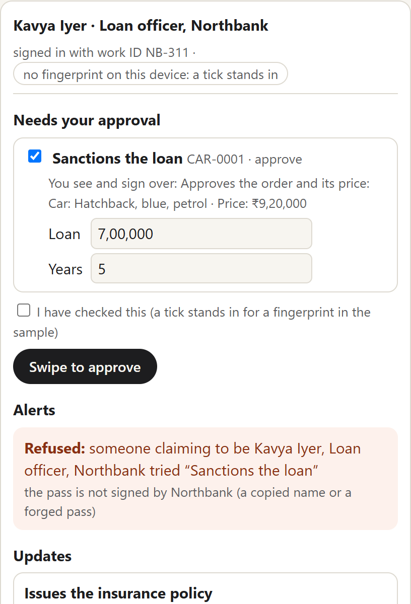
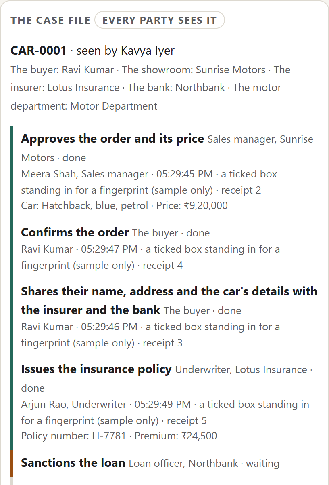

Verification Is All You Need
Reimagining today's processes for the agent era as multi-party digital workflows, where authorised people are the humans in the loop who verify each part in a quick and fraud-proof manner
Abstract
Most processes that cross people and organisations are digitised only on the surface: forms, portals and emails, while the workflow is still done in a haphazard manner with information flowing across different channels from one party to the next. In the AI agent era they can be reimagined as multi-party digital workflows, where information and approvals flow instantly through one workflow template shared by every party. There is a second reason. Fakes and fraud will multiply with AI, and today's defences chase fraudsters who simply change identities. This paper turns the focus around: instead of trying to identify fake cases, it confirms genuine cases. The authorised people in companies, government departments and institutions, and the private people involved, are the humans in the loop. Each sees their role related info and action items in one place, via their personal agent or business agent, and approves it. In a company or department, a person's digital login id is linked to a particular role that is authorised for certain approvals in a workflow. Now each such authorised person will see the action items waiting for approval by their particular role and then does a fingerprint swipe to do a digital approval. A genuine workflow will thus carry verification at every step by the authorised person for that step, and anything without this will be flagged as fraud.
- Workflow
- Published rules for a process that cuts across people and organisations: the parties, the steps, and who approves each step. One template, shared by every party involved.
- Human in the loop
- An authorised person who must verify and approve one part of a workflow before it moves on.
- Business agent
- An organisation's agent: it brings the data, alerts and approvals from all its systems into one dashboard for each role.
- Role signature
- An approval made for an organisation: the person's own fingerprint swipe, together with the role their organisation approved for them.
1. Introduction
Most processes that cross people and organisations, such as buying a car, registering a birth or paying a supplier, are digital only on the surface. This paper proposes rebuilding them for the agent era as multi-party digital workflows, in which each authorised person verifies and approves their own part instantly and in a fraud-proof manner.
Today such a process that involves multiple disconnected parties, moves as forms, portals and emails. This involves each stage being done digitally inside a company's system, but then it has to be passed on to another company or individual. Even though this may be done digitally via email, the workflow loses continuity and is slowed down. Also on seeing information as email or pdf means each party also has to trust documents it cannot verify by itself. For example, a digital invoice via email or as pdf can arrive with the supplier's logo and the name of its accounts manager, but a logo can be copied, a name typed and an email address made to look right. The invoice is supposed to be approved by someone with the authority to do so, yet that authority is never shown in a way anyone can check. There are two reasons to change this now.
Agents need shared workflows. Agents can resolve the verification part by carrying the required info and checking it. But for this to happen, the information and the approvals need to flow through one workflow template that every party shares, instead of through emails and portals.
Fakes will multiply, and chasing them does not work. AI makes the occurrence of convincing fakes more widespread. Blocklists, spam filters and fraud scores try to identify the fraudsters, but fraudsters simply change their names, numbers and accounts and start again. This paper turns the focus around by instead trying to identify and confirm the genuine players instead (Figure 2). A genuine step carries the verification of the authorised person who approved it, and anything without that verification stands out, whatever name it uses.
Part 1, the Agent Middleground Protocol (AMP) [1], introduced the personal agent, through which a person approves things with their own fingerprint swipe and then sends the data to Agent Middleground where it interacts with data from companies. This paper does the same for organisations, through the business agent, so that people who act for a company or an office also approve with their own swipe, the steps authorised for their role in any number of workflows.
2. The business agent and humans in the loop
As agents automate lots of interactions, a good part of a person's job becomes checking and approving. The business agent is where people in companies, government offices and institutions do it.
Everything in one place. A personal agent gathers a person's many apps into one list, and a business agent does the same at work. Today a head of people opens the hiring tool, the HR records, the IT access system and the training site one by one, and a government officer moves between several case systems. A business agent connects to all of these products through their APIs, and brings their data, alerts and pending approvals into one dashboard for each role (Figure 3). The person reads the summaries, asks questions across systems, and approves. Small items can be approved together with one swipe, and anything important gets an approval screen of its own.
Connected
Waiting for your approval · 5
Job offer: Anjali, backend engineer, Bengaluru
Alerts
Updates
Roles. The organisation gives each authorised person a role, such as "head of people" or "registration officer", and publishes a signed list of its roles and the workflows that each role is authorised for. The person signs in with their official work ID, as they do today, and the organisation signs a role pass for them, which says that this person holds this role here and approves with the passkey of this device (Figure 4). Alerts and approvals are sent to the role, so they reach whoever holds it at the time.
The role signature. In Part 1, a personal agent's approval is signed by the passkey on the person's own device, and proves that this particular person approved it. An approval made for an organisation carries the role pass as well. Together the two make a role signature, which proves that an authorised person approved on behalf of the organisation.
| Personal agent (Part 1) | Business agent (this paper) | |
|---|---|---|
| Signed with | the person's own device passkey | the person's own device passkey, and the role pass their organisation signed |
| Proves | this person approved this | this person, in this role, approved this for the organisation |
| Seen in | the person's list | the dashboard for the role |
Neither part is enough on its own. A stolen password comes without the person's fingerprint, and a real employee acting outside their role is refused. When someone leaves a role, their swipe no longer counts for approvals linked to that role. Every approval is signed over its exact details, such as the price the buyer saw, so it cannot be reused for anything else. A private person involved in a workflow, such as a buyer or a parent, is also a human in the loop, and approves as themselves.
3. Workflows
There are two possible options to host and run a workflow
3.1 Run on the owner's server. The organisation in charge of a process can publish a workflow as a signed template, which lists the parties, the steps, who approves each step, and what passes between them. It then runs the workflow on its own server. This works like an online form that every party's agent visits to see what is waiting for its role, read the details and hand in an approval. No one logs in to a portal: each person sees their part in their own dashboard, fetched by business or personal agent. The server accepts an approval only from the right person, in the right role, at the right step. Anything else is refused, recorded and shown to the involved parties as an alert. Each involved party can view the case file.
Records. Every approval and refusal is written to the owner's log. Each entry holds a fingerprint of the entry before it, so no entry can be removed without it showing. Public receipts show only these fingerprints, and each party keeps its own copy of the log to check against them.
3.2 Use an Agent Middleground. When the details must stay hidden from some parties, a workflow can run in an Agent Middleground instead, as described in Part 1. Each party brings its details there, the published rules work out the result, the humans in the loop still approve their parts, and each party takes back only a confirmation token. The sample code includes one such workflow, a sealed tender.
4. Try it: the sample code
The sample code for this paper is public at github.com/tonymcodes/Verification-Is-All-You-Need. It is starter code: it runs both kinds of workflow on one computer, and needs only Node.js, version 18 or later. In the car purchase of section 7, each person signs in with a work ID and sees their own screen. Every party sees the case file and can check every approval again, and a stranger using a copied name and work ID is refused (Figure 5).


git clone https://github.com/tonymcodes/Verification-Is-All-You-Need cd Verification-Is-All-You-Need npm start then open http://localhost:8800 npm test runs the checks
In the sample a ticked box stands in for the fingerprint, unless a device's real fingerprint is linked to the person.
5. Example use cases
- Change of address. A person records a change of address in their personal agent. This can initiate a workflow that passes information to verification authorities like electoral department, etc and then uses the verified address to send address change intimation to bank, employer, etc
- A prescription. The doctor signs the prescription in their role, and the pharmacist checks that signature before handing over the medicine.
- An admission. The department, the scholarship committee and a parent each approve their own part relevant for a student's admission offer.
- A supply chain. Orders, deliveries and invoices each carry the approval of the person responsible, so even the smallest supplier can be paid as soon as the goods arrive.
- Inside a company. Expenses and contracts are approved in roles, and critical steps in software, such as a release to customers, wait until the right person approves.
- Watermarked money. Every unit of digital money carries a watermark naming its owner, and a payment moves only with the verification set for its level. A scam payment can be stopped by a trusted contact, and money taken by a proven fraud can be returned. This is explored in detail in section 7.3.
- When someone dies. The hospital and the registrar confirm the death, and the heirs give their consent. Each bank, insurer and pension office then acts in its role, and the family follows one list instead of making months of visits.
- A new baby. The hospital confirms the birth, both parents give their consent, the registrar registers it, and the benefits office approves the child benefit.
- Donations and relief. Money is released in stages, as field officers and auditors confirm each stage, and money goes straight to verified accounts.
6. Security and limits
A stolen password is not enough, because every approval needs the person's own fingerprint. A real employee acting outside their role is refused, and the refusal is recorded. A copied logo, name or work ID carries no role signature, and a workflow that has been changed no longer matches its owner's signature. Large decisions can need more than one person, such as two of three committee members. A lost phone still needs the fingerprint, and the organisation can suspend the role at once.
There are limits. Verification proves who approved and in which role, but not that the decision was wise. It also does not stop someone from misusing their own authority, although every step they take is recorded.
7. Detailed examples
7.1 Buying a car
Today. Ravi buys a car with insurance and a loan. The showroom, the insurer, the bank and the motor department pass papers and scans between them, and each one checks documents it has no way to verify.
The workflow. The motor department publishes the workflow, since every car sale has to end with registration, and runs it on its own server. Five parties take part, each from its own dashboard or personal agent (Figure 6).
- 1Approves the car and priceSunrise Motors, the showroomMeera ShahSales managerHatchback · ₹9,20,000
- 2Confirms the orderthe buyerRavi Kumaras himselfimportant: a screen of its own
- 3Shares details with the insurer and bankthe buyerRavi Kumaras himselfsmall: can go in a list
- 4Issues the insurance policyLotus InsuranceArjun RaoUnderwriterpolicy LI-7781
- 5Sanctions the loanNorthbankKavya IyerLoan officer₹7,00,000 · 5 years
- 6Accepts the loan and the bank's claimthe buyerRavi Kumaras himselfimportant: a screen of its own
- 7Confirms the showroom is paidNorthbankKavya IyerLoan officerloan paid out
- 8Registers the carMotor DepartmentAnita DasRegistration officerbank's claim noted
What changes. Each step is approved only by the person who is authorised for that step. The registration officer sees the whole case, with the approval behind each part. No one carries papers between offices. A fake insurance policy or a forged loan letter has no role signature behind it, so it cannot enter this workflow. Years later, when the loan is repaid, the bank releases its claim on the car using a new workflow that refers to the old one and the registration authority updates it.
7.2 Investors, auditors and a milestone
Today. A young company sends its investors a quarterly report as slides and spreadsheets. The investors cannot tell whether the numbers have been polished, the auditor checks them months later, and money promised on reaching a milestone moves only after weeks of emails and calls.
The workflow. The company runs an investor-reporting workflow on its own server. Its current investors and its auditor are parties to it, so they see the actual numbers: revenue from the payment processor, users from the analytics tool and cash from the bank, each taken straight from the system that produced it. The lead investor's agreement says that the second tranche of its investment, ₹5 crore, is paid once quarterly revenue has been above ₹2 crore for three quarters in a row (Figure 7).
- 1Prepares the quarter's numbersFernhill Robotics, the companyArun JosephFinance headpulled from the bank, payments and analytics
- 2Signs off the reportFernhill RoboticsDev MalhotraChief executiveshared with investors and the auditor
- 3Reviews and attests the accountsCalder & Co, the auditorPriya RamanAudit partnermatched to bank and payment records
- 4Checks the milestoneNorthstar Ventures, lead investorSana QureshiInvestment analystrevenue above ₹2 crore, 3 quarters: met
- 5Approves the second trancheNorthstar VenturesElena CostaPartnerimportant: ₹5 crore, a screen of its own
- 6Co-approves the trancheNorthstar VenturesKwame MensahPartnertwo of three partners; then the money is sent, carrying both approvals
- 7Confirms the money has arrivedFernhill RoboticsArun JosephFinance head₹5 crore received
What changes. Every number carries the role signatures of the people who prepared, checked and approved it, and every investor sees the same record. When the milestone is met, an alert appears in the fund's dashboard, "Milestone met: release ₹5 crore?", and the money moves only when two partners approve. Nothing is passed around by email, and a report polished outside the workflow has no signatures behind it.
7.3 Watermarked money: a verified workflow based approach to stop financial frauds
Today. Digital money is guarded by one secret, such as a PIN, a password or an approval on the phone, and once it moves it is gone. Lakshmi, a retired teacher in Kochi, gets a call from a man who says he is from her bank's fraud team. He tells her that her account is under attack and that she must move ₹2,00,000 to a "safe account" at once. Under pressure, she approves the transfer. Within minutes the money has passed through several accounts, and the bank can at best freeze whatever is left.
The idea. Watermarked money brings the verification concept of this paper to digital money itself. Every unit of digital money, down to one paisa, gets an ID when it is issued and carries a small watermark: who owns it now, its last few owners, the payment that moved it last, and whether that payment is still settling or already final. Money moves only when the verification set for that payment's level is present, and the owner sets these levels once with their bank (Figure 8). Context counts as proof: paying her own insurance renewal, an instalment on her own loan or a bill from a shop she buys from needs only her swipe, whatever the amount. A large payment to someone new, with no context, needs two more humans in the loop, chosen by her in advance or even different approval steps.
What happens. When Lakshmi set her levels, she chose three trusted contacts: her son Arjun, her daughter and a close friend. When she swipes to send ₹2,00,000 to an account she has never paid before, the payment waits, and Arjun's agent shows him: "Your mother is sending ₹2,00,000 to a new account. Call her before you approve." He calls her, hears the story about the safe account, and declines. Nothing moves, and the receiving account is reported. The caller won her trust for a few minutes, but he could not get her son's verification.
If the money had moved. Suppose the scammer had fooled Arjun as well, or money had moved without valid verification in some other way. Payments take an hour or two to become final, and anyone receiving the units can see that they are still settling. During that time Lakshmi can report the fraud. Her bank's fraud officer and a police cyber-crime officer each verify the case, in their roles. Once both have approved, the watermarks written by the fraudulent payment expire, and Lakshmi's watermark is restored on the same unit IDs, wherever the money has gone. A payment made with the owner's own verification and a real purpose cannot be undone by the payer afterwards, so shops and sellers are protected too.
What changes. A stolen PIN, password or phone is no longer enough to take someone's money, and a scam has to fool more than one person. When fraud does happen, the money can be traced and returned, because every unit carries a record of who owned it. As in every other workflow in this paper, each approval along the way is recorded.
8. Conclusion
Agents will do most of the work in the processes that connect people and organisations, through workflow templates that every party shares. What agents cannot carry is authority. Authority belongs to people, in their own lives and in the roles their organisations give them. Part 1 gave each person a personal agent, and this paper gives each role a business agent. When the authorised people are the humans in the loop, each verifying their own part with their own signature, genuine processes become easy to complete and fraud-proof. Instead of chasing fraudsters who keep changing identities, anything without verification stands out. Adoption can start inside one company, grow to two organisations sharing a workflow, and then extend to public services.
References
- Tony Mathew (2026). Agent Middleground Protocol (AMP). Part 1 of this series.